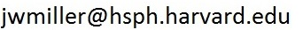

Associate Professor of Biostatistics
Harvard T.H. Chan School of Public Health
Department of Biostatistics
655 Huntington Avenue, Building 1, Room 419
Boston, Massachusetts 02115

The goal of my research is to develop statistical methods to help understand diseases of aging at the cellular/molecular level. I am interested in using high-throughput genomic data to develop mathematical models of the key biological processes and molecular mechanisms that underlie age-related decline in general, and cancer in particular. In addition to advancing our scientific understanding, this will enable the development of accurate prognostic and diagnostic tools for precision medicine.
My methodological research focuses on:
- robustness to model misspecification,
- nonparametric Bayesian models,
- frequentist analysis of Bayesian methods, and
- efficient algorithms for inference in complex models.
- models for de-biasing high-throughput sequencing data,
- inferring cancer tumor phylogenetic trees (clonal evolution),
- biostatistical analysis of X-linked Dystonia Parkinsonism (XDP), and
- models for tuberculosis risk assessment.
Reproducible parameter inference using bagged posteriors, J. H. Huggins and J. W. Miller, 2023. (pdf) (arXiv)
Principal variables analysis for non-Gaussian data, D. Clark-Boucher and J. W. Miller, 2023. (pdf) (arXiv)
Model-based dimensionality reduction for single-cell RNA-seq using generalized bilinear models, P. B. Nicol and J. W. Miller, 2023. (pdf) (bioRxiv)
Consistent model-based clustering using the quasi-Bernoulli stick-breaking process, C. Zeng, J. W. Miller, and L. L. Duan, Journal of Machine Learning Research, 24(153):1−32, 2023. (pub) (pdf) (arXiv)
Strong uniform laws of large numbers for bootstrap means and other randomly weighted sums, N. A. Spencer and J. W. Miller, 2022. (pdf) (arXiv)
Consistency of mixture models with a prior on the number of components, J. W. Miller, Dependence Modeling, 11(1):20220150, 2023. (pub) (pdf) (arXiv)
Bayesian data selection, E. N. Weinstein and J. W. Miller, Journal of Machine Learning Research, 24(23):1-72, 2023. (pub) (pdf) (arXiv) (Congratulations to Eli on receiving the IBM Student Paper Award at NESS 2021 for this work.)
Bayesian optimal experimental design for inferring causal structure, M. Zemplenyi and J. W. Miller, Bayesian Analysis, Advance Publication 1(1):1-28, 2022. (pub) (pdf) (arXiv)
Inference in generalized bilinear models, J. W. Miller and S. L. Carter, 2020. (pdf) (arXiv)
Robust inference and model criticism using bagged posteriors, J. H. Huggins and J. W. Miller, 2020. (arXiv)
Reproducible model selection using bagged posteriors, J. H. Huggins and J. W. Miller, Bayesian Analysis, 18(1):79-104, 2023. (pub) (pdf) (arXiv)
Fast approximate BayesBag model selection via Taylor expansions, N. A. Spencer and J. W. Miller, "Your model is wrong: Robustness & misspecification in probabilistic models" workshop, NeurIPS 2021. (pdf)
Asymptotic normality, concentration, and coverage of generalized posteriors, J. W. Miller, Journal of Machine Learning Research, 22(168):1−53, 2021. (pub) (pdf) (arXiv preprint of earlier version)
Identifying longevity associated genes by integrating gene expression and curated annotations, F. W. Townes, K. Carr, and J. W. Miller, PLOS Computational Biology, 16(11): e1008429, 2020. (pub) (pdf) (bioaRxiv)
Fast and accurate approximation of the full conditional for gamma shape parameters, J. W. Miller, Journal of Computational and Graphical Statistics (JCGS), Vol. 28, 2019, pp. 476-480. (pub) (pdf) (arXiv) (source code)
An elementary derivation of the Chinese restaurant process from Sethuraman's stick-breaking process, J. W. Miller, Statistics & Probability Letters, Vol. 146, 2019, pp. 112-117. (pub) (pdf) (arXiv)
Robust Bayesian inference via coarsening, J. W. Miller and D. B. Dunson, Journal of the American Statistical Association (JASA) , Vol. 114, 2019, pp. 1113-1125. (pub) (pdf) (extended version) (older version on arXiv) (code and data) (Recognized publication for the 2021 COPSS George W. Snedecor Award, received by David B. Dunson.)
A detailed treatment of Doob's theorem, J. W. Miller, 2018. (pdf) (arXiv)
Mixture models with a prior on the number of components, J. W. Miller and M. T. Harrison, Journal of the American Statistical Association (JASA), Vol. 113, 2018, pp. 340-356. (pub) (pdf) (arXiv) (code)
Flexible models for microclustering with application to entity resolution, B. Betancourt, G. Zanella, J. W. Miller, H. Wallach, A. Zaidi, and B. Steorts, Advances in Neural Information Processing Systems (NeurIPS), Vol. 29, 2016, pp. 1417-1425. (pub) (pdf) (arXiv)
Microclustering: When the cluster sizes grow sublinearly with the size of the data set, J. W. Miller, B. Betancourt, A. Zaidi, H. Wallach, and R. C. Steorts, Bayesian Nonparametrics: The Next Generation workshop, NeurIPS 2015. (pdf) (arXiv) (One of 5 winners of travel award.)
Inconsistency of Pitman-Yor process mixtures for the number of components, J. W. Miller and M. T. Harrison, Journal of Machine Learning Research, Vol. 15, 2014, pp. 3333-3370. (pub) (pdf) (arXiv) (Received the IBM Student Paper Award at NESS 2013.)
A simple example of Dirichlet process mixture inconsistency for the number of components, J. W. Miller and M. T. Harrison, Advances in Neural Information Processing Systems (NeurIPS), Vol. 26, 2013, pp. 199-206. (pub) (pdf) (arXiv)
Exact sampling and counting for fixed-margin matrices, J. W. Miller and M. T. Harrison, The Annals of Statistics, Vol. 41, No. 3, 2013, pp. 1569-1592. (pub) (pdf) (arXiv)
Importance sampling for weighted binary random matrices with specified margins, M. T. Harrison and J. W. Miller. (pdf) (arXiv)
Reduced criteria for degree sequences, J. W. Miller, Discrete Mathematics, Vol. 313, Issue 4, 2013, pp. 550-562. (pub) (pdf) (arXiv)
Estimated rates of progression to tuberculosis disease for persons infected with Mycobacterium tuberculosis in the United States, M. Ekramnia, Y. Li, M. B. Haddad, S. M. Marks, J. S. Kammerer, N. A. Swartwood, T. Cohen, J. W. Miller, C. R. Horsburgh, J. A. Salomon, N. A. Menzies, Epidemiology, Vol. 35 No. 2, 2024, pp. 164-173. (pub)
Establishing a Natural History of X-linked Dystonia Parkinsonism, P. Acuna, M. L. Supnet-Wells, N. A. Spencer, and 18 others including J. W. Miller (co-senior author), Brain Communications (Accepted), 2023
Radiation therapy-induced neurotoxicity is driven by heightened apoptotic priming in early life and prevented by blocking BAX, R. Singh, C. Fraser, C. B. Lim, G. Joshi, S. Yu, J. Spetz, X. Qin, S. Toprani, Z. Nagel, M. C. Hocking, R. A. Cormack, T. I. Yock, J. W. Miller, T. Gershon, Z-M. Yuan, K. A. Sarosiek, (Under review), 2021.
Plasma extracellular vesicle proteins as promising noninvasive biomarkers for diagnosis of idiopathic pulmonary fibrosis, R. S. R. Adduri, K. Cai, K. Velasco-Alzate, R. Vasireddy, J. W. Miller, S. P. de FrÍas, F. P. de FrÍas, Y. Horimasu, H. Iwamoto, N. Hattori, Y. Zhang, K. F. Gibson, A. K. Pal, Z. Chen, D. Nicastro, L. Li, S. Cherian, L. M. Sholl, S. Shetty, H. Ndetan, A. H. Maeda, M. A. P. Ferretto, G. M. Hunninghake, D. A. Schwartz, D. J. Kass, I. O. Rosas, and N. V. Konduru, Journal of Extracellular Biology, Vol. 2, No. 7, 2023. (pub)
Exploiting endogenous and therapy-induced apoptotic vulnerabilities in immunoglobulin light chain amyloidosis with BH3 mimetics, C. S. Fraser, J. K. E. Spetz, X. Qin, A. Presser, J. Choiniere, C. Li, S. Yu, F. Blevins, A. N. Hata, J. W. Miller, G. A. Bradshaw, M. Kalocsay, V. Sanchorawala, S. Sarosiek, and K. A. Sarosiek, Nature Communications, Vol. 13, No. 1, 2022, pp. 1-19.
Realistic biomarkers from plasma extracellular vesicles for detection of beryllium exposure, R. S. R. Adduri, R. Vasireddy, M. M. Mroz, A. Bhakta, Y. Li, Z. Chen, J. W. Miller, K. Y. Velasco-Alzate, V. Gopalakrishnan, L. A. Maier, L. Li and N. V. Konduru, International Archives of Occupational and Environmental Health, No. 95, 2022, pp. 1785-1796. (pub) (pdf)
Age-dependent regulation of SARS-CoV-2 cell entry genes and cell death programs correlates with COVID-19 severity, Z. Inde, B. A. Croker, and 29 others including J. W. Miller, Science Advances, 7(34): eabf8609, 2021. (pub) (pdf)
Genomic and transcriptomic correlates of immunotherapy response within the tumor microenvironment of leptomeningeal metastases, S. M. Prakadan, C. A. Alvarez-Breckenridge, S. C. Markson, and 23 others, including J. W. Miller, Nature Communications, 12(1), 2021, pp. 1-10. (pub) (pdf)
Trends, mechanisms, and racial/ethnic differences of tuberculosis incidence in the US-born population aged 50 years or older in the United States, S. Kim, T. Cohen, C. R. Horsburgh, Jr, J. W. Miller, A. N. Hill, S. M. Marks, R. Li, J. S. Kammerer, J. A. Salomon, and N. A. Menzies, Clinical Infectious Diseases, ciab668, July 2021. (pub) (pdf)
Real-time genomic characterization of advanced pancreatic cancer to enable precision medicine, A. J. Aguirre, J. A. Nowak, N. D. Camarda, R. A. Moffitt, and 57 others including J. W. Miller, Cancer Discovery, CD-18-0275, 2018. (pub)
Nonparametric and Variable-Dimension Bayesian Mixture Models: Analysis, Comparison, and New Methods,
J. W. Miller, Brown University, Division of Applied Mathematics, 2014.
(pdf)
(Received the Brown University Outstanding Dissertation Award in the Physical Sciences, generously sponsored by the Joukowsky Family Foundation.)